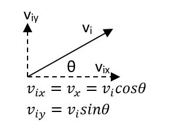
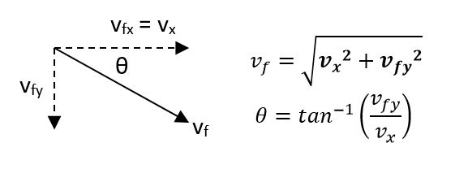

Motion in two dimensions can be modeled as two independent motions in each of the two perpendicular directions associated with the x and y axes. That is, any influence in the y direction does not affect the motion in the x direction and vice versa.
| X and Y Component | Final Velocity |
|---|---|
|  |  |